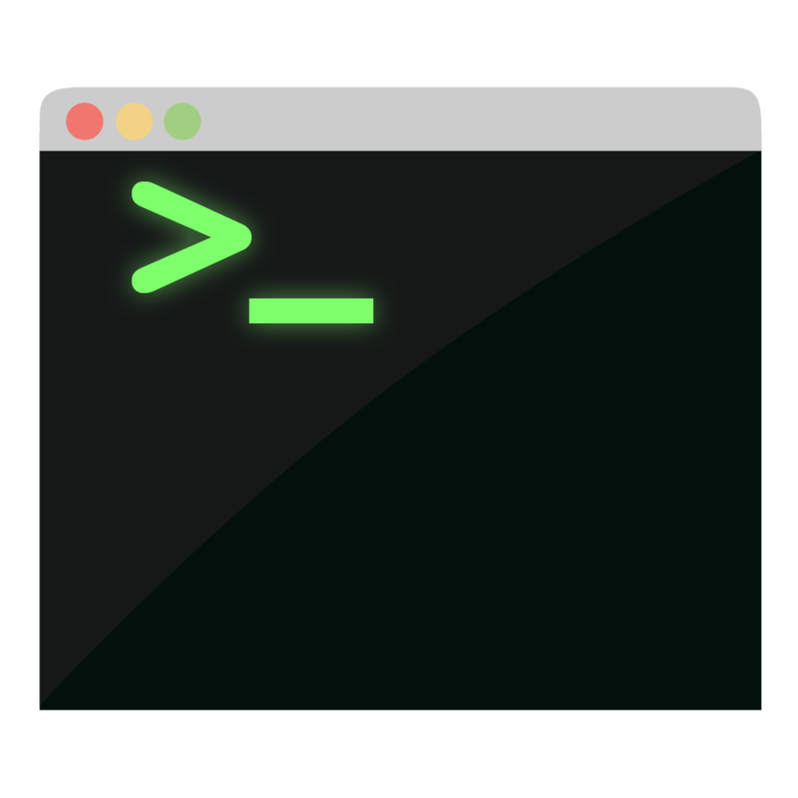

HOT TIP!
Subscript to HTML5 Weekly
http://html5weekly.com/demos, libraries, podcasts, articles
Keep up to date!
Developer Tools
- Layout and Style
- Javascript debugging
- Performance monitoring
- Absolutely essential
- Mobile simulation
- without it you fly blind
Page Inspector
- View and Modify HTML
- Walk the DOM
- Examine Box model
- Look at Fonts
- Ctrl-Shift-C
(Cmd-Option-C on the Mac & Linux)
Web Console
- View warnings and errors
- From javascript
- From CSS
- From network
- Instant REPL
- Special helper commands, like help()
- Control-Shift-K
(Command-Option-K on the Mac)
Javascript Debugger

- Examine Javascript code
- Set breakpoints
- Pause on exceptions
- Pause on events (click)
- Step through code
- Control-Shift-S
(Command-Option-S on the Mac).
Network Monitor
- Inspect all network requests
- images, css/js files, ajax
- Examine request
- Examine response
- Timeline
- Edit and resend
Javascript Profiler
- What is javascript doing?
- Hot functions
- Where to optimize
NEATO

- Responsive Design View
- Developer Toolbar
- 3D view
- Paint Flashing Tool
- Device Debugging
Demo Time
JS Fiddle
http://jsfiddle.net/Code, manipulate, run web pages on the fly